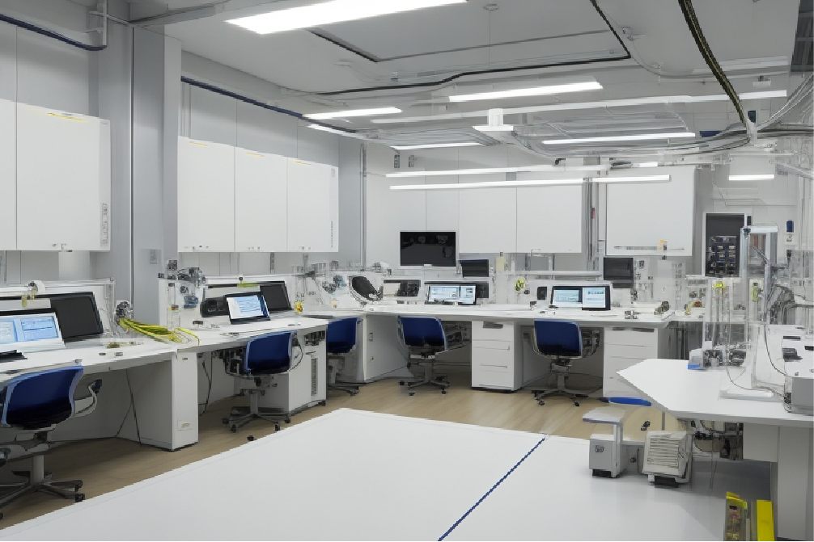

"Descubrimiento Revolucionario: Científicos Crean Material Capaz de Generar Energía a Partir del Aire
Investigadores han desarrollado el "Aerocaptura", un material nanotecnológico que captura energía ambiental, incluyendo luz solar, vibraciones sonoras y energía cinética del viento, para convertirla eficientemente en electricidad utilizable. Este avance promete revolucionar la producción de energía y contribuir significativamente a la lucha contra el cambio climático al proporcionar una fuente de energía sostenible y prácticamente inagotable.
En un avance científico verdaderamente revolucionario, investigadores de todo el mundo han anunciado el desarrollo de un material capaz de generar energía a partir del aire que nos rodea. Este sorprendente avance promete transformar la forma en que obtenemos y utilizamos la energía, allanando el camino hacia un futuro más sostenible y limpio.
El material en cuestión, conocido como "Aerocaptura", es una estructura nanotecnológica delgada y altamente eficiente que actúa como un colector de energía ambiental. Funciona capturando partículas de energía en el aire, incluida la luz solar, las vibraciones sonoras y la energía cinética del viento. Luego, convierte estas partículas en electricidad utilizable a través de un proceso altamente eficiente.
El potencial del Aerocaptura es asombroso. Puede utilizarse para alimentar dispositivos electrónicos de baja potencia, reduciendo la dependencia de baterías convencionales, e incluso para alimentar edificios enteros a partir de la energía ambiental capturada en su entorno.
El Dr. Elena Rodriguez, líder del equipo de investigación, comentó: "Este material podría marcar un punto de inflexión en la producción de energía. Podría ayudar a combatir el cambio climático al proporcionar una fuente de energía limpia, sostenible y prácticamente inagotable".
Si bien todavía quedan desafíos técnicos por superar antes de que el Aerocaptura esté listo para su implementación a gran escala, los científicos están entusiasmados con el potencial de esta tecnología para transformar nuestro mundo.